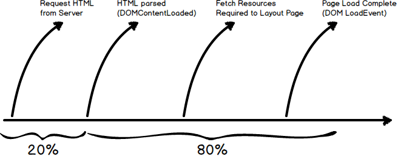
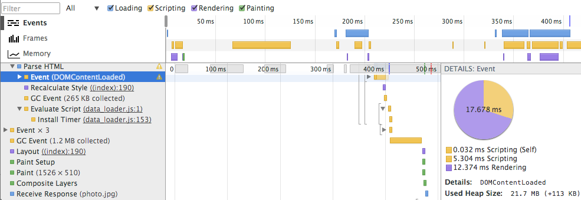
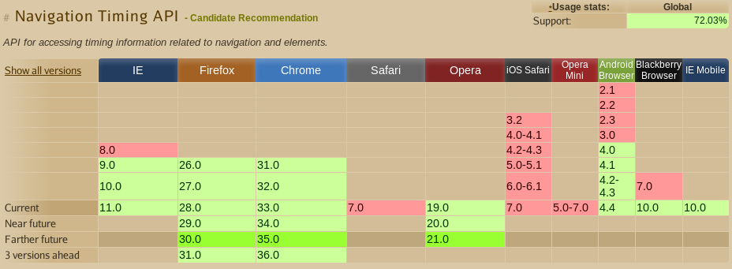
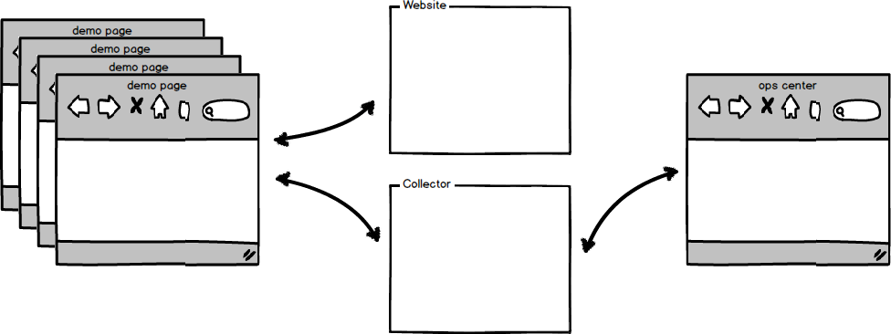

HTML5
Resource Timing
Stephen Kuenzli & Tomasz Stechly
Performance Matters!
Because it impacts your bottom line
Total Load Time = Server + Client
20%
of total load time
is spent getting html from the server
http://stevesouders.com/hpws/rules.php
80%
of total load time
is spent in client after html loaded
Loading timeline
Loading timeline example
(google.com)
Old school timing
DOM Event timing
- DOMContentLoaded (navigation)
- DOM load event (navigation)
- Load event for individual resources
Problems with navigation timing
[From http://www.w3.org/TR/navigation-timing/]
<!doctype html>
<html>
<head>
<script type="text/javascript">
var start = new Date().getTime();
function onLoad() {
var now = new Date().getTime();
var latency = now - start;
alert("page loading time: " + latency);
}
</script>
</head>
</html>
Doesn't measure latency before page is loaded
Javascript code in the page affect timing
Problems with resource timing
[From http://www.w3.org/TR/resource-timing/]
<!doctype html>
<html>
<head>
</head>
<body onload="loadResources()">
<img src="http://w3c-test.org/webperf/image0.png" >
</body >
</html >
Kills browser resource fetch optimization
Messy and time consuming instrumentation
HTML5 Navigation & Resource Timing
Navigation Timing
- Complete page load timing javascript API
- Calculated by browser
Navigation Timing

http://www.w3.org/TR/navigation-timing/timing-overview.png
Navigation Timing Support
http://caniuse.com/#feat=nav-timing
Resource Timing
- Complete timing information for individual resources
- Calculated by browser
- css, embed, img, link, object, script, subdocument, svg, xmlhttprequest, other
Resource Timing

Resource Timing Support
- Chrome
- IE 10+
- Opera
Demo - console
resource-timing-demo.herokuapp.com
or
bit.ly/1q1XOlP
What does it mean
How to make it useful
Collect data
Visualize & analyse
Demo - collect data centrally
resource-timing-demo.herokuapp.com
or
bit.ly/1q1XOlP
Demo - collect data centrally
Demo - visualize & analyze
WeblogNG
Resources
- blog.weblogng.com
- www.w3.org/TR/resource-timing/
- www.w3.org/TR/navigation-timing/
- stevesouders.com/hpws/rules.php